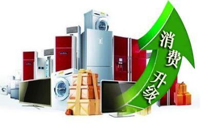
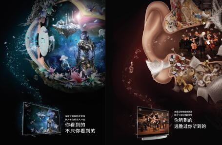
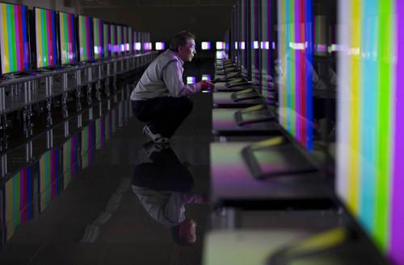

“消费升级”可谓是近年来的高频热词，大到买房购车，小到日用粮油，都在借力“升级”的趋势，在行业中开创。消费升级，从市场的反馈来说，代表着消费者单纯追求功能和性价比的平价消费增长放缓，高端品类的消费支出显著增加，重视品质和个性的人群正在成为消费的主力军。

2015年11月，国家开创性的提出了供给侧结构性改革，要求从提高供给质量出发，用改革的办法推进结构调整，矫正要素配置扭曲，扩大有效供给，更好满足消费者的需要，促进经济社会持续健康发展。其中关键词“有效供给”，放在家电行业语境中，说的就是消费升级趋势下贴合消费者需求、满足用户喜好的产品。
于此同时，消费者在选购产品时往往碰到这样的苦恼：表面上商品琳琅满目很丰富，但本质上同质化问题严重，“乱花渐欲迷人眼”却很难选出真正的心头爱。
发力互联网电视领域的夏普也意识到，当下复杂多样的消费族群及其个性化的需求特点，决定了家电行业要想获得新的有力增长点，必须要有针对性的调整战略。
发现新特性，创建新品类，是夏普在消费升级大趋势下走出的一条“不同寻常路”。具体来说，发现新特性就是要找到差异化的品牌价值，继而在消费者心中占据独特的优势；创建新品类，则是通过重新切割市场分类，从消费者原有认知中创造出全新消费场景，推出新产品。
反向定制，细分市场需求制定生产策略
夏普希望能够提供准确满足客户消费需求的产品，在这个过程中，需要寻求一些客户细分的机会，查找不同的客户所使用互联网电视的痛点在哪里，再结合夏普的优势反向定制，这就包括和我们的内容方深度定制，提升整个行业对于这个细分客户群的认知。艾瑞咨询调查曾指出，家中使用电视最多的是青年人和老年人，但家中购买互联网电视的决策大多数都是由年轻人做出的，客厅已经逐渐回归成为家庭娱乐的中心。

基于对市场的深入洞察，2016年“双十一”期间，有别于友商惯用的买内容送电视的方式，夏普另辟蹊径推出了买70英寸“送”60英寸互连网电视的诚意促销，主打“客厅+主卧”双升级的概念，凭借着独有10代线堺工厂工艺对大屏面板的高效切割优势，将音画升级引入家庭娱乐生活，从而开辟出全新品类满足消费升级的一次战略实践。针对年轻用户群，夏普推出了45英寸互连网电视，将技术下沉的利益让给核心的消费群体。据悉，这场夏普互连网电视的入户让利还将持续到春节期间，更加凸显夏普的家庭品类核心战略。

夏普认为，创新不应本末倒置，与时俱进的同时，更要努力让自己的起点，成为傲人的制高点：延续“液晶之父”的技术基因，秉承工匠精神持续研发核心技术，融合富士康精湛工艺优化家电制造，凭借极致的视听功能，满足人们最本质的向往。

（夏普最新的平面广告，跳脱传统思维，着重视听的极致展现）
相比风口效应，硬软兼修优势明显
而如果说硬件品质是根源，那么丰富多彩的内容就如繁花。互联电视行业经过两三年的发展，将发展到一个全新阶段——“硬软兼修”的时代。秉承着“开放合作，生态共荣”的理念，夏普不断积极整合阿里数娱和爱奇艺的影视资源，为用户引入多样化的互联网视频内容。在硬件保证极佳“视”界体验的基础上，好内容的价值也得以完美显现，甚至放大。
发现新特性，创建新品类，这条“不同寻常路”，既是夏普技术优势和“硬软兼施”战略的体现，更是对于用户消费升级迫切需求的积极回应。过去，绝大多数企业都只是在围绕大众市场展开争夺，而如今竞争格局却发生了很大变化。消费者越来越关注诸如品质、健康、环保等与自身高度相关的要素。
近几年互联网大潮风起云涌，单纯依靠互动营销而化身“风口飞猪”的边际效益不断衰减，曾经初次接触新产品、保持高度新鲜好奇的消费者也在众多厂商持续的市场教育中变得成熟而挑剔，其偏好正不断向生活品质、情感需求、个性订制和时尚设计等因素回归靠拢。专注品质和孜孜以求的匠人精神愈发受追捧，正折射了消费者对产品“硬实力”的诉求。
技术夯实 智能家电生态发展新趋势
于此同时，智能电视市场的竞争也逐渐棋过中盘，从开疆拓土、冲量先行的竞速，进入到市场成熟、品质回归的长盘拉力。根据中怡康测算数据显示，2017年智能电视的零售额同比预计增长5.7%，零售额规模达到1445亿元，预计智能电视的零售额渗透率将达到93%；智能白电的零售额同比预计增长60.1%，零售额规模达到709亿元，预计智能白电的零售额渗透率将达到23.9%。对于这样一场考验品牌沉淀和综合实力的新型持久战来说，保持长期专注的匠人企业显然会更得心应手、应对自如。

夏普的转型，正是站在了消费升级、品质回归的风口浪尖。前不久，夏普还将官方微博正式更名为夏普互连网电视，从“联”过渡到“连”，不仅代表夏普不再是单纯指网络的链接，而是智能化发展的智慧家庭。迎来富士康全面入主后的“液晶之父”夏普，从去年起开始正式布局智慧家庭战略，继续深耕“眼球计划”。面对行业的混战，富士康董事长郭台铭胸有成竹：首先实现稳定的供应商管理和有效的组织协同，继而打穿内容与产品的软硬结合、云端和大数据生产的虚实结合，全力打造争夺中国“客厅经济”主入口的制胜法宝。
- 推荐图文
- 推荐人物
- 推荐企业